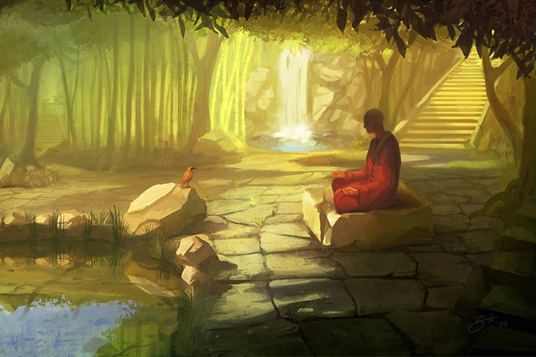

How to meditate..
The goal of meditation is to focus and quiet your mind,
eventually reaching a higher level of awareness and inner calm.
It may come as a surprise to learn that you can meditate anywhere and at any time,
allowing yourself to access a sense of tranquility and peace no
matter what's going on around you. This article will introduce you to the basics of meditation,
enabling you to begin your journey on the path of enlightenment and bliss.
CHOOSING ENVIRONMENT
- Choose a peaceful environment. Meditation should be practised somewhere calming and peaceful.
This will enable you to focus exclusively on the task at hand and avoid bombarding your mind
with outside stimuli. Try to find a place where you will not be interrupted for the duration of
your meditation - whether it lasts five minutes or half an hour.
The space does not need to be very large - a walk-in closet or even your office can be used for
meditation, as long as it's somewhere private.
- For those new to meditation, it's especially important to avoid any external distractions.
- Meditating outside works for many meditators.
MEDITATIVE POSITION
- As stated above, it is very important that you are comfortable while you meditate,
which is why finding the best position for you is essential.
Traditionally, meditation is practised by sitting on a cushion on the ground,
in a lotus, or half-lotus position.
- The most important thing is that you are comfortable,
relaxed, and your torso is balanced so that your spine
supports all of your weight from the waist up.
- The traditional hand placement involves resting your hands
in your lap, palms facing upward, with your right hand on top of your left.
However, your can also just rest your hands on your knees or leave them
hanging down by your side - whichever you prefer.
THE WAY IT'S DONE!
- Follow your breathing. The most basic and universal of all meditation techniques
,breathing meditation is a great place to start your practice.
- Try to focus on your breathing and only your breathing.
Don't think about your breathing or pass any sort of judgement of it
- Some mental images which might help you include imagining a coin sitting
on the spot above your navel, rising and falling with your breath
- Don't worry if your mind starts to wander - you are a beginner and,
like anything, becoming good at meditation takes practice.
Just make an effort to refocus your mind on your breathing and
try to think of nothing else. Drown out the chatter and attempt to clear your mind.
GUIDED MEDITATION
- Take a guided meditation class. If you are unsure about where to begin
when it comes to meditating at home, it may be a good idea to take a
guided meditation class with an experienced teacher first.
- Meditation classes exist for most types of meditation,
but you could also try going on a spiritual retreat where you will
get a chance to sample different types of meditation and find out
what works best for you.
UNDERSTANDING IT

- Understand that meditation is a journey. The purpose of meditation
is to calm the mind, achieve inner peace and, eventually,
reach a higher spiritual dimension, often referred to simply as being.
- However, it is important to realize that it may
take years of practice to achieve the level of awareness or
higher consciousness experienced by yogis and monks. This does not matter.
- Meditation is a journey, akin to climbing a mountain, where every step
along the path of enlightenment brings you closer to the summit.
- When starting off, you shouldn't be too concerned with
the quality of the meditation itself.
As long as you feel calmer, happier and more at peace at
the end of your practice, you will know that your meditation was successful.